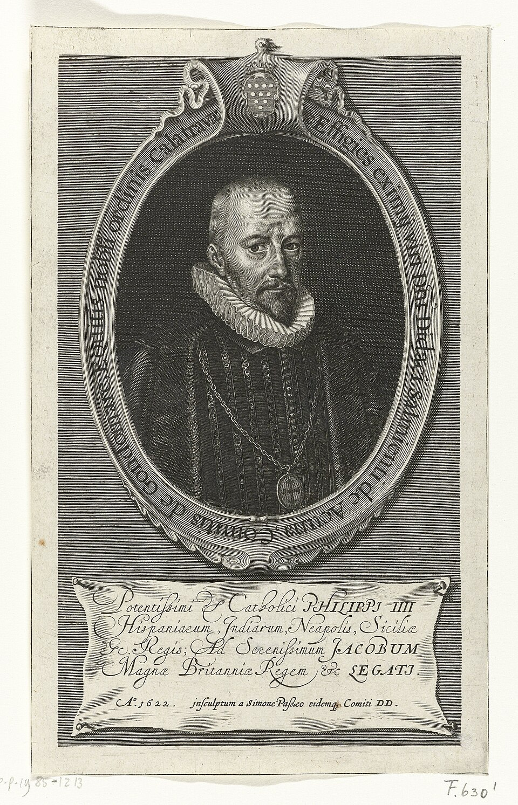
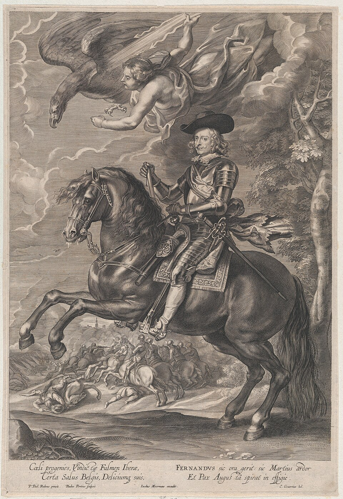
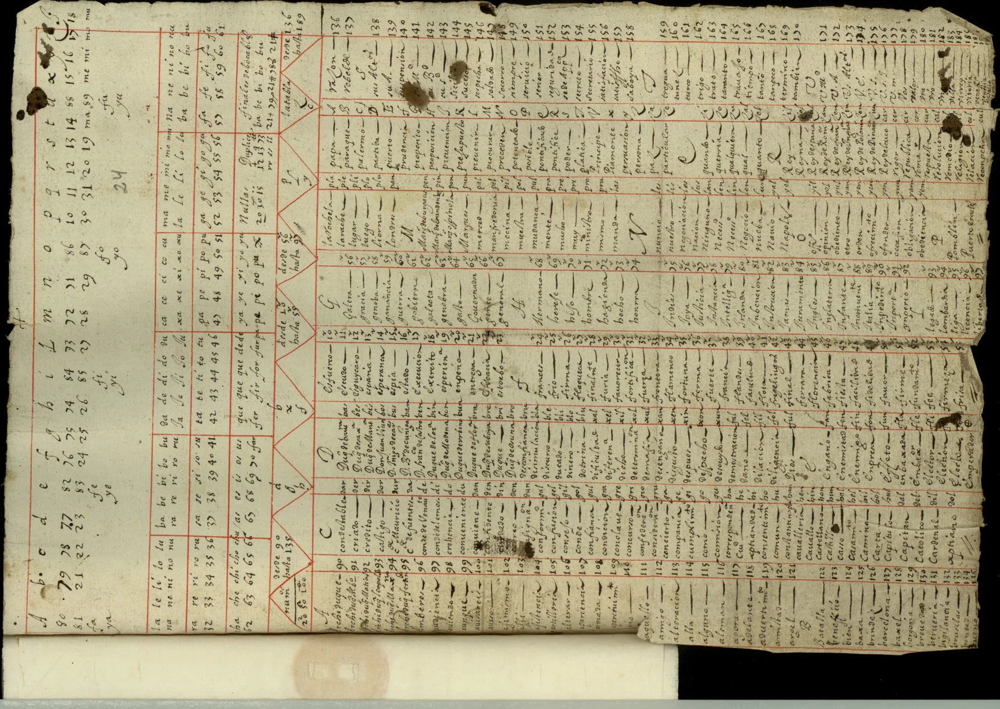

Artikel · Franche-Comté, Tiårskrigen
Besançon, 1639: don Antonio Sarmientos chiffertabel
Tre år efter belejringen af Dole er Franche-Comté stadig i krig, og Bruxelles sender betroede mænd derhen. En af dem, don Antonio Sarmiento de Acuña, søn af ambassadør Gondomar, brevveksler i chiffer med kardinalinfanten og med Madrid. Hans originale breve findes i Bruxelles og Madrid. Men i begyndelsen af 1900-tallet skrev en lærd mand fra Franche-Comté dem af, og han skrev også chiffertabellen af. Denne afskrift findes i Besançon. Vi har transskriberet den og sat den på prøve.
»de mi mano y ciffarle«
»med egen hånd og sætte det i chiffer«: Sarmiento forklarer, at han selv skriver sine depecher og chifrerer dem (afskriften i Ms 2093, mod slutningen af bindet).[1]
Hvad der er nyt, hvad der var kendt
Kendt. Antonio Sarmientos mission i Franche-Comté i 1638–1639 er kendt af de historikere, der har skrevet om Saavedra Fajardo og Antoine Brun.[2][3] Bibliotekets katalogbeskrivelse nævner »table des chiffres« (chiffertabel) på f. 100–103 i Ms 2093.[1] Klarteksten til de chifrerede breve, der er afskrevet i bindet, gives af afskriveren selv, over tallene.
Nyt, så vidt vi ved. Transskriptionen af tabellen (326 numre, kolonner med stavelser og tegn, 90 grupper på tre bogstaver), som så vidt vi ved her for første gang offentliggøres som tekst; en på forhånd fastlagt kontrol, der viser, at tabellen gælder for bindets chifrerede breve, men kun delvist med vores nuværende læsning (69,7 % mod højst 10,3 % for 200 blandede tabeller); og forbindelsen til de chifrerede breve fra Filip 4. og kardinalinfanten til Sarmiento, der opbevares i Madrid, og som Daniel Bourdeau havde påpeget uden nøgle.[6]
Hvem er Antonio Sarmiento?

Don Antonio Sarmiento de Acuña er søn af Diego Sarmiento de Acuña, greve af Gondomar, Spaniens ambassadør i London under Jakob 1., en af sin tids mest berømte diplomater. Han er ridder af Alcántara-ordenen, medlem af Milanos råd i 1634 og påtager sig den ene mission efter den anden for det spanske monarki: i Lorraine i 1633, i Modena og Firenze i 1634, i Wien i 1635, i Speyer i 1636, i Schweiz i 1639.[2] Han er en mand af akter og korrespondance, af den slags, som Madrid og Bruxelles sender derhen, hvor der skal forhandles, tælles penge og aflægges rapport.
1638–1639: en udsending i et krigshærget land

Franche-Comté tilhører den spanske konge og hører under statholderen i Nederlandene, kardinalinfanten Ferdinand, Filip 4.s bror. Siden belejringen af Dole i 1636 har krigen ikke sluppet sit tag i landet.[8] I begyndelsen af 1638 beslutter kardinalinfanten at sende Sarmiento derhen for anden gang: et memorandum fra Sarmiento, dateret Bruxelles den 4. februar 1638 og bevaret i Chiflet-samlingen i Besançon, plæderer for, at pengehjælpen skal komme hurtigt, i det mindste i begyndelsen. Sarmiento ankommer til provinsen i juni 1638; han råder til at samle den politiske regering, der dengang lå hos markis de Saint-Martin, og den militære kommando, der dengang lå hos hertugen af Lorraine, på én hånd.[2][5]
Han er ikke alene. Diego Saavedra Fajardo, forfatteren til Empresas políticas, sendes af sted på samme tid og fordeler kongens penge. De to mænd kan ikke enes; ifølge de kilder, Rafael González Cañal har samlet, støder Sarmiento sammen med alle, især med parlamentet i Dole og dets generalprokurør, Antoine Brun, som læserne af artiklen om Dole 1636 allerede kender. Saavedra rejser igen i slutningen af september 1638; Sarmiento er stadig i provinsen i december og befinder sig i Milano i november 1639.[2][3][4]
Hans breve fra 1639 handler om penge, kontrakter og schweizere. Det brev, vi har kontrolleret (f. 24 i Ms 2093), forklarer, at en kontrakt om levering af penge (asiento) er indgået i Milano med købmænd, der skal levere midlerne i Luzern, fordi ingen har penge i Burgund, og fordi schweizernes land (Esguízaros) er sikrere; det taler om ammunition og byernes befæstninger, om en hær på syv til otte tusind mand, og om at der i Burgund kun er lidt infanteri og intet kavaleri. Det er krigen set af den, der skal finansiere den.
Hvordan tabellen kom til Besançon
Originalerne til denne korrespondance findes i Archives générales du Royaume (Belgiens Rigsarkiv) i Bruxelles. I begyndelsen af 1900-tallet lader vicomte Albéric de Truchis de Varennes, der forbereder en biografi om Antoine Brun (udkommet i 1932), dem skrive af eller skriver dem selv af. Han skænker siden sine hæfter til biblioteket i Besançon: det er Ms 2090 til 2115, »Correspondance diplomatique d’Antoine Brun, 1636–1656«, seksogtyve hæfter. Bind IV, signatur Ms 2093 (118 blade), indeholder kardinalinfantens korrespondance med Antonio Sarmiento fra 8. februar til 29. november 1639. Katalogbeskrivelsen tilføjer: »f. 100–103 : table des chiffres de la correspondance d’A. Sarmiento«.[1][3]
Afskriveren har gjort et værdifuldt arbejde. Når et brev er chifreret, skriver han tallene og tegnene af og skriver dechifreringen over dem, linje for linje, formentlig efter den dechifrering, der står på originalen (det har vi ikke kontrolleret i Bruxelles). Derefter har han skrevet selve tabellen af sidst i bindet. Bindet er digitaliseret på Mémoire vive, Besançons digitale bibliotek; billederne gengives ikke her.
Tabellen
Tabellen er en spansk nomenklator af en type, der var almindelig i 1600-tallet: tal for bogstaverne, andre for stavelserne, andre igen for hele ord og navne. Den er rigere, end man skulle tro ved første øjekast (vi havde først talt 150 numre):
- Tallene 1 til 30: bogstaverne, med flere tal for de hyppige vokaler (tre for i, to for a, e, o og u), dernæst va, ve, vi, vo, vu og ca.
- Tallene 31 til 90: stavelser ordnet i rækker (ce, ci, co, cu; sa…su; da…du; la…lu; al…ul; cha…chu; fan…fun; man…mun; van…vun; tan…tun), plus tre tal for que og to for de.
- Tallene 91 til 326: ord og navne i nogenlunde alfabetisk orden, fra conde til Rey: hertugen af Bayern, hertugen af Lorraine, hertugen af Savoyen, Gud, Flandern, Frankrig, Francisco de Melo, kejseren, schweizerne (Esguízaros), Italien, markis de Leganés, markis de Castañeda, Milano, Napoli, prins Thomas, Piemonte… 213 numre har en værdi; de øvrige er tomme i afskriften.
- Kolonner uden numre (f. 102): stavelsespar, en kolonne »bogstav for bogstav« (a, o, y, c… skrevet for u, b, c, g…), understregede versaler for ord (B for fundamento, F for guerra, M for gente, R for gobierno, O for Genova), tegn (deriblandt et »signe de répétition« [gentagelsestegn] og et »+«-tegn mærket »chiffre« [chiffer]).
- Grupper på tre bogstaver (f. 103): cli = batalla, cru = Burgund, gle = kardinal, Iut = S.M., luc = secreto, ral = Valtellina, nuf = V.M.…
Der er mange tomme felter, og nogle numre forekommer to gange (24 og 25 betyder begge »va«). Den afskrevne tabel er måske ufuldstændig eller rekonstrueret af afskriveren ud fra brevene: det er en hypotese, som kun originalen kan afgøre. Den fuldstændige transskription gives nedenfor.

Hvad tabellen gør det muligt at læse
Her er begyndelsen af en linje i brevet på f. 24, sådan som vi transskriberede den på strimler, hvor glossen var skjult, derefter afkodede den mekanisk med tabellen uden at rette noget, og til sidst sammenlignede den med afskriverens glosse:
| afskriftens chiffer | 32 | 18 | p | ho | 37 | 20 | 2 | 43 | 267 | x | ho | hi | 280 | on | 3 | 86 |
|---|---|---|---|---|---|---|---|---|---|---|---|---|---|---|---|---|
| frossen tabel | ci | o | n | ? | si | e | ʒ | do | necessario | u | ? | ? | otro | ? | 2 | que |
| afskriftens glosse | ci | o | n | no | si | e | n | do | necessario | u | no | ni | otro | po | r | que |
Læsning: [anti]cipacion, no siendo necessario uno ni otro, porque… (»forskuddet [af penge], idet hverken det ene eller det andet er nødvendigt, fordi…«). De fremhævede felter er dem, hvor vores tabel tager fejl eller tier.
Eksemplet viser både, at tabellen er den rigtige, og hvad der mangler i vores læsning. Bogstaverne (18 = o, 37 = si, 43 = do), ordene (267 = necessario, 280 = otro) og kolonnen »bogstav for bogstav« (p skrevet for n, x for u) fungerer. Derimod har stavelserne i kolonne A på f. 102 (ho, hi, on) ingen værdi i vores transskription: glossen viser, at de skal læses gennem den tilstødende kolonne B, linje for linje (ho = no, hi = ni, on = po, an = pa). Og de tegn, vi havde læst som »ʒ« og »2« ved nr. 2 og 3 i tabellen, står i virkeligheden for n og r: det er formentlig kursive bogstaver, som vi har læst forkert. Andre steder i samme brev giver tabellen cru = Burgund, 174 = Esguízaros, 251 = Milano, ligesom glossen.
Kontrollen: én måling, et delvist resultat
Det er let at finde overensstemmelser bagefter; det svære er at bevise, at en tabel passer. Vi fastlagde proceduren skriftligt og registrerede dens fingeraftryk (SHA-256), før vi åbnede en eneste chifreret side:[7]
- Frossen tabel. Tabellen blev først transskriberet og derefter frosset: ingen værdi kunne rettes eller gættes under afkodningen.
- Chifferet transskriberet i blinde. Brevet på f. 24 (billede 31) blev transskriberet på strimler, hvor den interlineære glosse var dækket til: 706 tal og tegn.
- Én eneste måling. Den mekaniske afkodning blev sammenlignet med glossen, der først blev læst bagefter: 461 af 661 glosserede tal og tegn afkodes nøjagtigt som hos afskriveren, altså 69,7 %. For 200 tilfældigt blandede tabeller er den bedste score 10,3 % (0,5 % i gennemsnit).
- Afgørelse. Tabellen passer uden tvivl: den gør det seks til syv gange bedre end tilfældet. Men den på forhånd fastsatte tærskel var 85 %: resultatet klassificeres derfor som delvist, ikke valideret. Der er ikke foretaget nogen anden måling.
Analysen af de 200 afvigelser, foretaget efter målingen og uden bevisværdi, viser, at de hovedsagelig skyldes vores transskription af tabellen (108 koder uden værdi, næsten alle i kolonne A og B på f. 102; nr. 2 og 3; et ikke-understreget »H«, der står for t, og som skal skelnes fra det understregede H, der står for gracia), og ikke et andet system. En tabel rettet på disse punkter ville med stor sandsynlighed komme over 85 %, men det har vi ikke målt: det kræver en ny procedure på et andet glosseret brev i bindet (der er nogle på billede 27 til 41).
Brevene i Madrid
Tabellens interesse rækker ud over Besançon. I Madrid opbevarer Real Academia de la Historia i Salazar y Castro-samlingen (bind A-87) de originale, næsten alle chifrerede breve fra Filip 4. (omkring 23 stykker, marts 1638 – december 1639) og fra kardinalinfanten (en halv snes, 1638–1639) til Antonio Sarmiento. Daniel Bourdeau fandt dem i samlingens trykte katalog (leads 1085 og 1086 i hans cyphersolver-depot): bindet er ikke digitaliseret. Ifølge kataloget har en del af disse breve en samtidig dechifrering indbundet ved siden af; andre har ikke, som kongens breve af 30. januar, 17. juni, 22. november og 31. december 1639.[6]
Tabellen i Besançon er med stor sandsynlighed den, der hører til denne korrespondance, eftersom det er de samme brevskrivere og de samme år. Men vi har ikke afprøvet den på originalerne i Madrid, som vi ikke har set. Vi har gjort Daniel Bourdeau opmærksom på den, og en anmodning om reproduktion er forberedt; hvis billederne kommer, vil brevene med samtidig dechifrering tjene som kontrol, og de øvrige vil kunne læses.
Hvad der stadig er usikkert
- Tabellen er læst af én enkelt læser på bibliotekets billeder, som ikke gengives her. Felter markeret med et spørgsmålstegn er usikre læsninger.
- Kontrollen er delvis (69,7 % mod en tærskel på 85 %). De rettelser, der er nævnt ovenfor (kolonne A/B, nr. 2 og 3, ikke-understreget H), er iagttagelser gjort efter målingen; de er ikke indarbejdet i den offentliggjorte transskription, som forbliver den frosne tabel.
- Det er en afskrift fra 1900-tallet. Vi ved ikke, om tabellen i Bruxelles er fuldstændig, eller om afskriveren har skrevet den af, som den var, eller suppleret den.
- Teksten til brevene i Besançon gives af afskriverens glosse: vi foreslår ikke nogen ny læsning af den.
- Vi har ikke selv konsulteret Truchis de Varennes (1932), Fraga Iribarne (1955) eller Ms Chiflet 35: vi citerer dem efter González Cañal.
Fuldstændig transskription af tabellen
Frossen tabel af 9. november 2026 (arbejdsfil, SHA-256-fingeraftryk, der begynder med 6d2f8d68). Afskriftens stavemåde. »—« = tomt felt; »?« = usikker læsning. På f. 102 er kolonnerne benævnt A til H fra venstre mod højre; C, E og G giver det skrevne tegn, D, F og H dets værdi. Retningen A → B (A skrevet, B klartekst) blev konstateret efter målingen.
| 1 — | 2 ʒ? | 3 2? | 4 i | 5 — | 6 — | 7 f | 8 l. | 9 m | 10 l |
| 11 y | 12 i | 13 u | 14 i | 15 o | 16 e | 17 a | 18 o | 19 a | 20 e |
| 21 u | 22 ʒ | 23 j | 24 va? | 25 va | 26 ve | 27 vi | 28 vo | 29 vu | 30 ca |
| 31 ce | 32 ci | 33 co | 34 cu | 35 sa | 36 se | 37 si | 38 so | 39 su | 40 da |
| 41 de | 42 di | 43 do | 44 du | 45 la | 46 le | 47 li | 48 lo | 49 lu | 50 al |
| 51 el | 52 il | 53 ol | 54 ul | 55 cha | 56 che | 57 chi | 58 cho | 59 chu | 60 fan |
| 61 fen | 62 fin | 63 fon | 64 fun | 65 man | 66 men | 67 min | 68 mon | 69 mun | 70 van |
| 71 ven | 72 vin | 73 von | 74 vun | 75 — | 76 — | 77 — | 78 — | 79 — | 80 tan |
| 81 ten | 82 tin | 83 ton | 84 tun | 85 que | 86 que | 87 que | 88 de | 89 de | 90 — |
| 91 conde | 92 — | 93 — | 94 camino | 95 — | 96 — | 97 — | 98 — | 99 — | 100 correspondencia |
| 101 — | 102 correo | 103 — | 104 compañia | 105 — | 106 consideracion | 107 — | 108 — | 109 confianca | 110 — |
| 111 consejo | 112 confusion | 113 conformidad | 114 cuidado | 115 — | 116 conviene | 117 conveniente | 118 — | 119 castigo | 120 — |
| 121 — | 122 campo | 123 comun | 124 costa | 125 — | 126 Duque de Baviera | 127 — | 128 — | 129 duque de Lorena | 130 — |
| 131 Duque de Savoya | 132 — | 133 — | 134 — | 135 — | 136 — | 137 — | 138 disgusto | 139 — | 140 — |
| 141 duque | 142 Dios | 143 diligencia | 144 — | 145 daño | 146 demostracion | 147 — | 148 despacho | 149 despues | 150 — |
| 151 duchado | 152 discurso | 153 dificultad | 154 dicha? | 155 dicha? | 156 diversion | 157 — | 158 — | 159 dicta | 160 embaxador |
| 161 — | 162 — | 163 — | 164 — | 165 — | 166 effecto | 167 era - ere | 168 emperador | 169 enemigo | 170 — |
| 171 — | 172 ello | 173 engagna? | 174 Esguicaros | 175 — | 176 escudo | 177 España | 178 espera | 179 estado | 180 exercito |
| 181 experiencia | 182 — | 183 — | 184 forma | 185 fuerte | 186 — | 187 facultad | 188 Flandes | 189 — | 190 Frances |
| 191 Francia | 192 — | 193 — | 194 fortificacion | 195 frontera | 196 — | 197 Fran.co de Melo | 198 — | 199 — | 200 — |
| 201 hermano | 202 — | 203 — | 204 — | 205 haciendo? | 206 hecho | 207 hacer | 208 haviendo | 209 hallado | 210 importancia |
| 211 imperio | 212 — | 213 justo | 214 juicio | 215 — | 216 joyas | 217 — | 218 intelligencia | 219 instruccion | 220 — |
| 221 — | 222 junta | 223 — | 224 infante | 225 — | 226 inconveniente | 227 Italia | 228 — | 229 industria | 230 invierno |
| 231 interessa | 232 — | 233 instancia | 234 — | 235 — | 236 — | 237 lugar | 238 — | 239 legado | 240 licencia |
| 241 luego | 242 Lorena | 243 levant | 244 — | 245 marques de Leganes | 246 — | 247 — | 248 — | 249 M.is de Castaneda | 250 marques |
| 251 Milan | 252 — | 253 — | 254 — | 255 mucho | 256 muy | 257 — | 258 — | 259 — | 260 — |
| 261 montaña | 262 ministro | 263 mente | 264 — | 265 nueva | 266 ninguna | 267 necessario | 268 necessidad | 269 Napoles | 270 — |
| 271 nuestra | 272 negocia | 273 — | 274 nacion | 275 naturales | 276 — | 277 obligacion | 278 — | 279 orden | 280 otro |
| 281 — | 282 occasion | 283 opinion | 284 offender | 285 offre? | 286 — | 287 — | 288 obra | 289 — | 290 — |
| 291 — | 292 — | 293 principe | 294 principe Thomas | 295 — | 296 — | 297 — | 298 — | 299 persona | 300 paz |
| 301 — | 302 papel | 303 paraque | 304 — | 305 prudencia | 306 proposito? | 307 — | 308 — | 309 — | 310 — |
| 311 possible | 312 — | 313 poder | 314 — | 315 platico | 316 Piamonte | 317 particular | 318 pues | 319 provincia | 320 pretexto? |
| 321 quanto | 322 qual | 323 — | 324 quando | 325 quenta | 326 Rey |
| ud for nr. | A | B | C → D | E → F | G → H |
|---|---|---|---|---|---|
| 291 | an | pa | a → u | ш → s? | ans → ano |
| 292 | en | pe | e → — | > → i? | ens → — |
| 293 | in | pi | i → — | ⌊ → a? | ins → assi |
| 294 | on | po | o → b | Δ → y? | ons → asistencia |
| 295 | un | pu | u → — | ℓ → h? | uns → artilleria |
| 296 | y → c | > → i? | |||
| 297 | at | ma | b → — | ħ → x? | alt → — |
| 298 | et | me | c → g | ∮ → p? | elt → — |
| 299 | it | mi | d → g | ʃ → f? | ilt → aunque |
| 300 | ot | mo | f → r | Є → t? | olt → antes |
| 301 | ut | mu | g → i | [ → signe de répétition? | ult → aviso |
| 302 | h → t | ||||
| 303 | ax | fa | j → — | + → chiffre? | bas → apariencia |
| 304 | ex | fe | k → x | r → supprimer [?]? | bes → — |
| 305 | ix | fi | l → s | bis → armada | |
| 306 | ox | fo | m → p | bos → aquella | |
| 307 | ux | fu | n → d | bus → amigo | |
| 308 | p → n | ||||
| 309 | ha | na | q → h | bat → alla | |
| 310 | he | ne | r → n | bet → alguna | |
| 311 | hi | ni | s → t | bit → adelante | |
| 312 | ho | no | t → c | bot → — | |
| 313 | hu | nu | tt → d | but → Alemania | |
| 314 | ꝥ → b? | ||||
| 315 | ya | ra | x → u | ||
| 316 | ye | re | z → a | ||
| 317 | yi | ri | B → Fondamento | i (souligné) → general? | |
| 318 | yo | ro | F → guerra | 9 (souligné) → grison? | |
| 319 | yu | ru | H → gracia | ||
| 320 | L → hombre | ||||
| 321 | ap | xo | M → gente | ||
| 322 | ep | xe | R → governo | ||
| 323 | ip | xi | RL → governador | ||
| 324 | op | xo | N → gasto | ||
| 325 | up | xu | O → Genova | ||
| 326 | ɔ → a? |
| cla → — | Iat → razon? | naf → tengo |
| cle → — | Iet → — | nef → teniendo |
| cli → batalla | Iit → — | nif → villa |
| clo → — | Iot → — | nof → — |
| clu → bien | Iut → S.M. | nuf → V.M. |
| cra → buena | Ial → S.A | nas → tambien |
| cre → — | Iel → — | nes → — |
| cri → — | Iil → — | nis → — |
| cro → — | Iol → successo | nos → trata |
| cru → Borgoña | Iul → sospecha | nus → — |
| das → brevedad | lac → — | ral → Valtelina |
| des → — | lec → — | rel → voluntad |
| dis → — | lic → señor | ril → viene |
| dos → — | loc → securidad? | rol → visto |
| dus → — | luc → secreto | rul → vida |
| gar → casal | las → soldado | ras → — |
| ger → Colonia? | les → socorre | res → — |
| gir → — | lis → siempre | ris → — |
| gor → cartas | los → servicio | ros → — |
| gur → capitan | lus → Savoya | rus → verdad |
| gla → catholico | mal → satisfacion | pal → — |
| gle → cardinal | mel → secretario | pel → — |
| gli → — | mil → — | pil → — |
| glo → cavalleria | mol → sobre | pol → — |
| glu → cavallos | mul → — | pul → — |
| hac → resolucion | mah → tanta | par → V.A.? |
| hec → — | meh → tener | per → — |
| hic → remedio | mih → tiempo | pir → — |
| hoc → — | moh → — | por → — |
| huc → — | muh → termino | pur → — |
Noter og henvisninger
Bibliothèque municipale de Besançon, Ms 2093, »Tome IV : correspondance du cardinal-infant don Ferdinand avec Antonio Sarmiento (8 février – 29 novembre 1639)«, 118 bl., i Ms 2090–2115, »Correspondance diplomatique d’Antoine Brun, 1636–1656«, afskrift ved vicomte Albéric de Truchis de Varennes af de originale breve, der opbevares i Archives générales du Royaume i Bruxelles (1900-tallet, gave fra Truchis de Varennes); chiffertabel på f. 100–103 (billede 116–119), kontrolleret brev på f. 24 (billede 31). Beskrivelse og billeder på Mémoire vive ↗; billederne er konsulteret til forskningen, ikke gengivet. Biblioteket beder om at blive underrettet om enhver offentliggørelse af utrykte dokumenter: det er underrettet om denne.
Rafael González Cañal, »Tres escritos desconocidos de D. Diego Saavedra Fajardo«, Murgetana, nr. 73, note 8 til 17 (Sarmientos biografi, memorandummet af 4. februar 1638, ankomsten i juni, uoverensstemmelserne, tilstedeværelsen i Milano i november 1639). PDF ↗
A. de Truchis de Varennes, Un diplomate franc-comtois au XVIIᵉ siècle. Antoine Brun (1599–1654), Besançon, 1932, s. 175–180 (citeret efter González Cañal).
M. Fraga Iribarne, Don Diego de Saavedra y Fajardo y la diplomacia de su época, Madrid, 1955, s. 272–285 (citeret efter González Cañal).
Bibliothèque municipale de Besançon, Ms Chiflet 35, f. 225–245: »Negociación de Don Antonio Sarmiento quando le embiaron de Flandes 2ª vez á Borgoña en el año de 1638« og tilstødende stykker (citeret efter González Cañal).
Daniel Bourdeau, depotet cyphersolver ↗,
research/leads.json, leads 1085 (Filip 4. til Sarmiento, RAH, Salazar y Castro A-87, f. 16–140) og 1086 (kardinalinfanten til Sarmiento og Saavedra, A-87, f. 256–311), efter det trykte katalog over Salazar y Castro-samlingen; vores melding: issue #346 ↗.Forhåndsregistreret procedure (9. november 2026, fingeraftryk SHA-256 4656a6e6…, tillæg dd732192…), frossen tabel (6d2f8d68…), maskeret transskription af f. 24 (b133cf49…), én måling: 461/661 = 0,697; 200 blandede tabeller (seed 20261109): maksimum 0,103, gennemsnit 0,005. Forskningsdossier af Brice Dudout, med Claude.
Se vores artikel Dole, 1636: chifferet, som Rossignol havde læst.
Paulus Pontius efter Rubens, rytterportræt af kardinalinfanten, The Metropolitan Museum of Art (CC0); Simon de Passe, portræt af greven af Gondomar, 1622, Rijksmuseum RP-P-1985-1213 (CC0); via Wikimedia Commons. Intet billede fra Bibliothèque municipale de Besançon er gengivet.